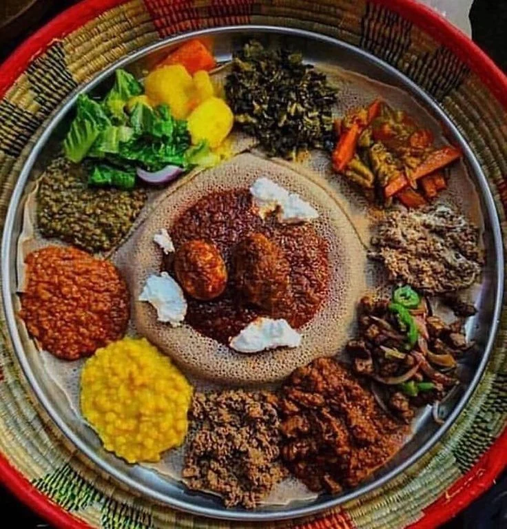
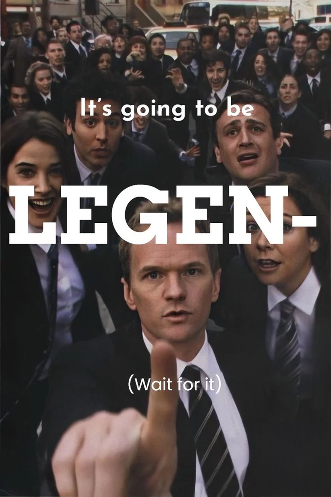
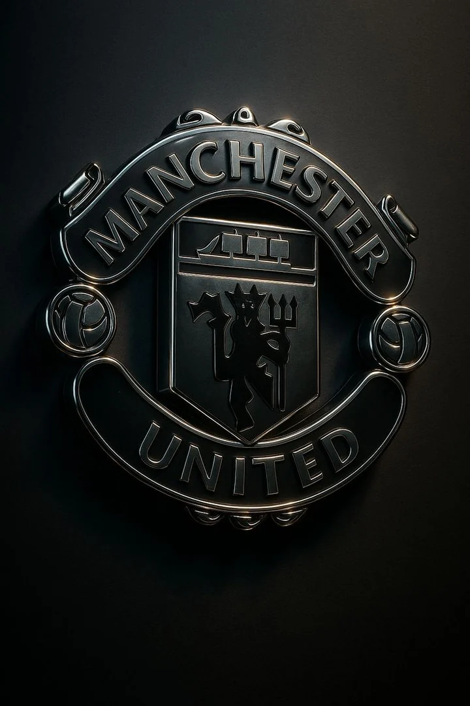
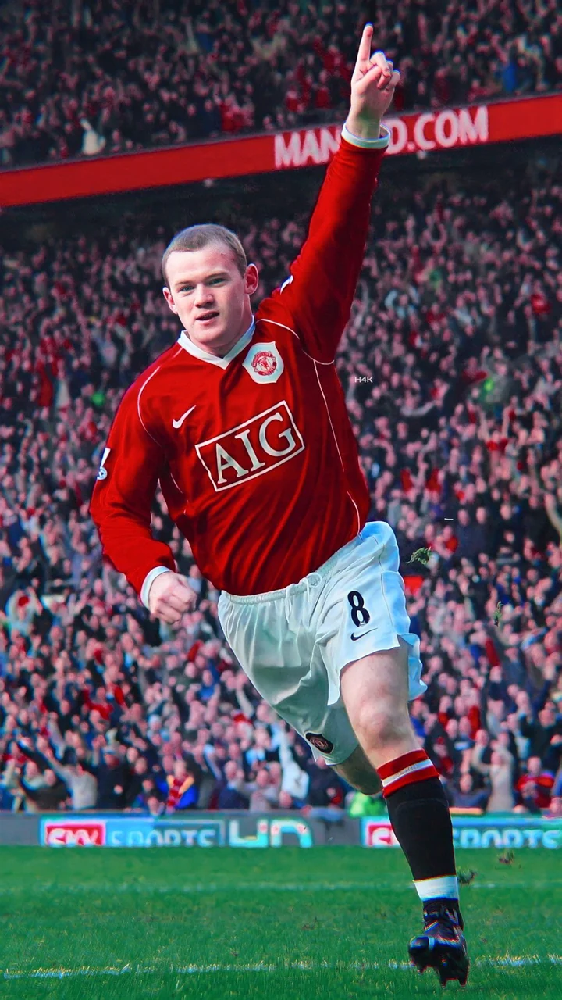
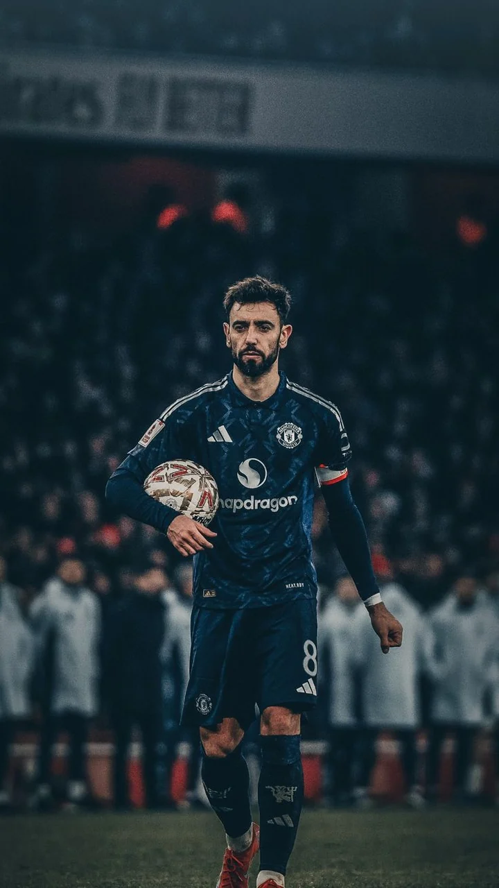
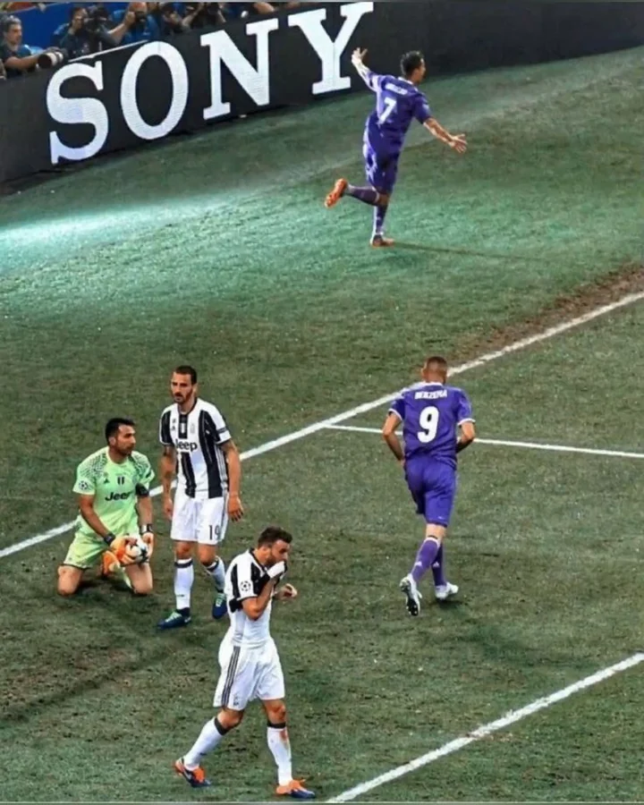
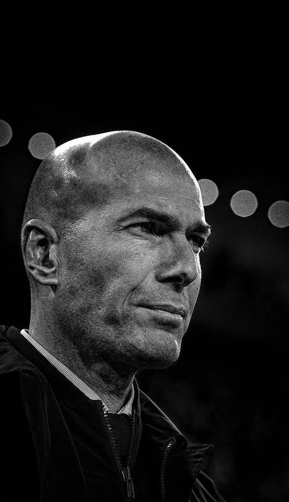
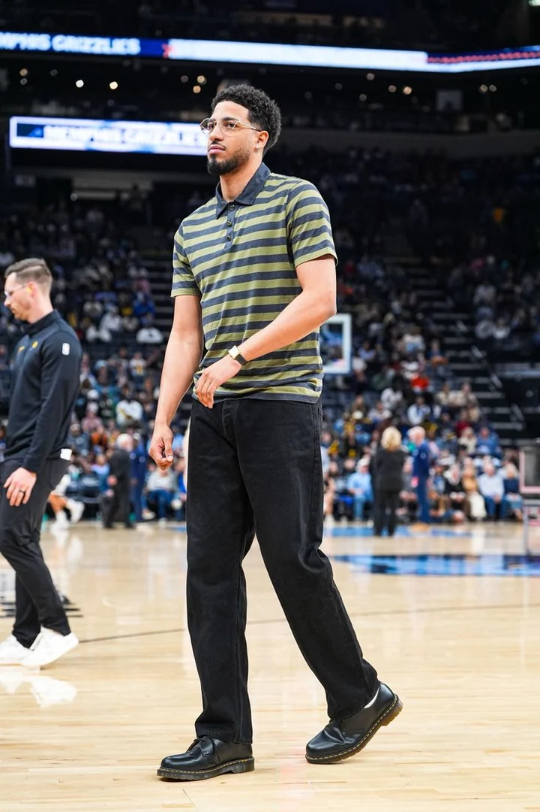

Pop / Funk / R&B
Michael Jackson · Bruno Mars
Different sounds. Same playlist.
Michael Jackson · Bruno Mars
Jorja Smith · Olivia Dean
Stormzy
Miles Davis · Mulatu Astatke
You won’t catch me anywhere near a gym bench. Maybe in 2019/27. Give me my AirPods and a ridiculously long walk instead.
If you need proof I actually move, you can find me on Strava.
View My Strava ↗
I’ll always choose traditional Ethiopian dishes, putting Difo Dabo at the top. I love eating from a shared communal plate with Injera, where everyone eats together. Sharing meals brings people closer, and giving or receiving a gursha makes any dish taste better.
The favorites, the scenes, and the people behind them.
The one. My all-time favorite.
Yes, all four count as one. No, that isn’t cheating.

Denis Villeneuve · Martin Scorsese · Steven Spielberg · David Fincher
Denzel Washington · Robert De Niro · Al Pacino · Leonardo DiCaprio · Christian Bale · Brad Pitt
My favorite.
Also: Viola Davis · Meryl Streep
The hallway fight.
The hunter and the target sit down face-to-face in a quiet restaurant, acknowledging each other’s absolute dedication to their respective paths.
The twist: the “war on God,” the blame placed on Paul Dano’s character, and the reality that he was never their actual son, but the first victim.

2005–2014
Manchester United first. Cristiano forever. Knicks, somehow.

My dad introduced me to United when I was five or six. It stuck.


His entire career is a blueprint for what a human being can achieve through sheer force of will. He was not born with the ultimate footballing blueprint; he built it in the gym, on the training pitch, and in his own mind. When you look at Ronaldo, you do not see a divine miracle. You see discipline. You see suffering. You see a man who decided he would not let anyone—not even nature—limit how great he could be.

Cardiff · 2017


Yes, both can be true.
Real Madrid is the biggest football club in the world.
CR7 is the greatest human being to touch a football.
New York City
How I Met Your Mother probably has a lot to answer for. The late nights, familiar places, ridiculous stories, and the feeling that your people are always somewhere nearby made New York feel like a place I need to experience for myself.
I still want the New York version.
I low-key wish I never had to get married, but if it becomes absolutely necessary, it’s happening at the Mandarin Oriental, Lago di Como.
No negotiation.